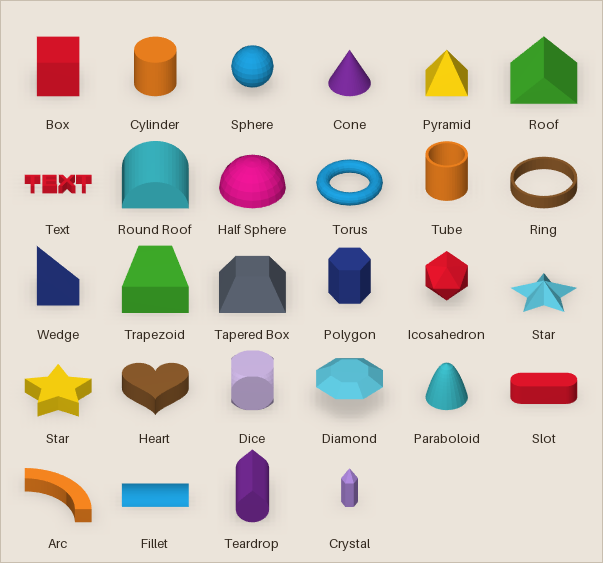
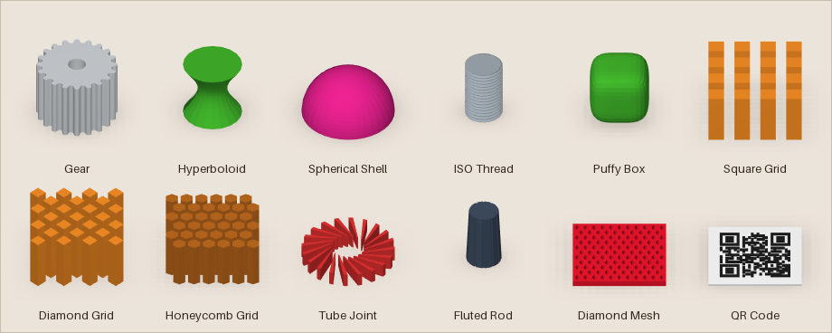
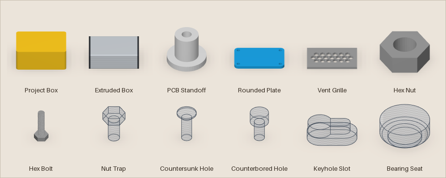
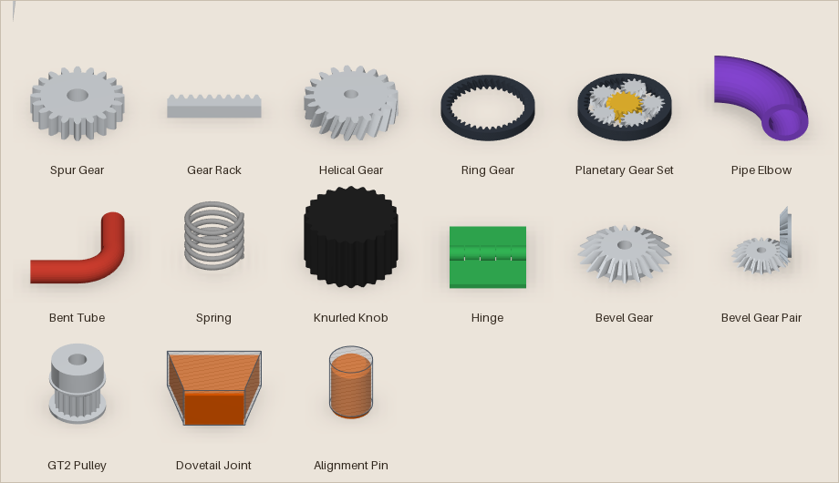
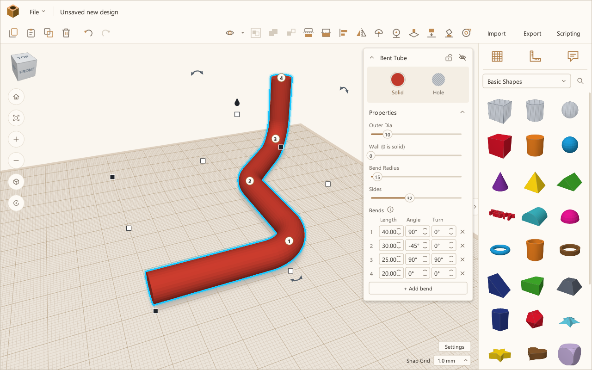
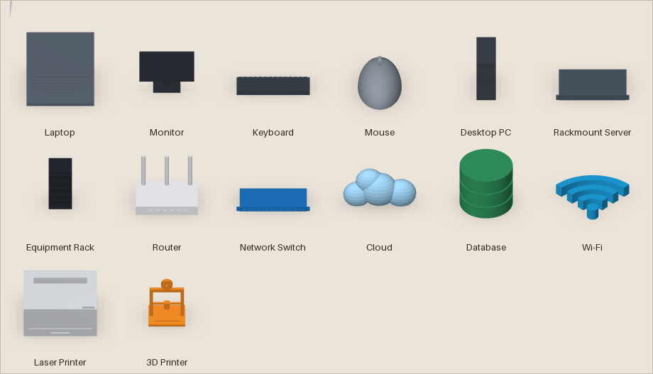

Chapter 13
The shape library
Every shape in the shape panel, library by library. Choose a library from the list at the top of the panel, or use the search (Shapes).
The pictures show the shapes at about the same size so they fit the page. In ScottiCAD each comes in at a sensible real size: a hex nut is a few millimetres across and an equipment rack is not.
Basic Shapes

The building blocks. The panel also has the box, the cylinder and the sphere ready-made as holes, at the top. Any other shape becomes a hole with the Hole button in Properties.
Most have a few settings in Properties. Some worth knowing:
| Shape | Settings |
|---|---|
| Box | Radius rounds the edges; Steps sets how smooth the rounding is |
| Cylinder | Sides: 48 looks round, 6 makes a hexagon. Bevel rounds the top and bottom edges |
| Sphere | Steps: more is smoother |
| Cone | Top Radius: above zero, the cone has its tip cut off. Sides |
| Pyramid | Sides: the number of sides of its base |
| Tube, Ring | The wall thickness, and the number of sides |
| Torus | The size of the ring and of the tube that forms it |
| Polygon | The number of sides |
| Star (the pointed one) | The number of points and how deep they are |
| Tapered Box, Trapezoid | The sizes of the base and of the top |
| Text | The words, the font and how far the letters stand up (Text) |
| Slot | A box with fully round ends. Its ends stay round whatever size you make it. Made a hole, it is a slot a screw can slide along |
| Arc | Part of a ring: Radius, Wall Thickness (0 makes a pie slice) and Angle, from 1° to a full circle. Changing a setting keeps the arc's center where it is, so the arc grows or shrinks round it |
| Fillet | A bar whose curved face fills an inside corner. See below |
| Teardrop | A round bar lying on its side with a 45° point on top. See below |
| Crystal | A quartz crystal: Sides, Point Height, Taper, Double Pointed, and Irregularity with Seed. See below |
Fewer sides or steps make a shape faceted, which can be a style in its own right. More make it smoother, and slower to combine in big groups.
The fillet
Place a Fillet as a solid along the line where a wall meets a floor: its curved face rounds the inside corner and makes the joint stronger. It arrives the right way round for a wall at its back and a floor under it; turn it for other corners.
Made a hole and laid along an outside edge with its curved face toward the part, it cuts that one edge round, where the box's Radius rounds every edge.
The teardrop
A round hole running sideways through a part sags at the top when it is printed, because its roof has nothing under it. A Teardrop made a hole fixes that: its top rises to a point at 45°, which prints without support. It arrives lying down, ready to use. Flat Top cuts the point off level with the top of the circle, which keeps the hole closer to round; the short flat roof bridges.
The crystal
Irregularity makes the faces unequal, as on real quartz, and Seed picks which crystal you get: each seed is a different crystal, and the same seed always gives the same one. Give each crystal in a cluster its own seed so they don't look stamped out. A crystal with one point prints standing on its foot; a double-pointed one needs to lie on a face or be sunk into something.
Parametric

Shapes built from their settings. Change the numbers in Properties and the shape is made again.
| Shape | What it is |
|---|---|
| Gear | A simple gear with rounded teeth, for decoration and light duty. For gears that mesh properly, use the Mechanical library |
| Hyperboloid | A waisted tower, like a cooling tower |
| Spherical Shell | A hollow dome with a wall thickness |
| ISO Thread | A metric screw thread. Set its Pitch, and size it with the handles to the diameter and length you need. As a solid it is a threaded rod; as a hole it cuts a threaded hole |
| Puffy Box | A box with bulging faces |
| Square Grid, Diamond Grid, Honeycomb Grid | Open grids, for vents, trays and light panels |
| Tube Joint | A ring of angled blades between an inner and an outer radius |
| Fluted Rod | A rod with grooves down its length: a handle or a grip |
| Diamond Mesh | A flat panel of diamond openings |
| QR Code | A scannable code for the text you type. See below |
Printed threads need room. Make a threaded hole a little larger than its bolt, and try a short test piece before printing the part.
The QR code
Type a link, a message or a Wi-Fi login in the QR Code's Text, and it becomes a code a phone can scan. It comes in two parts, a pale base with the blank margin a scanner needs and the dark code standing on it, so it prints in two colours.
- Error Correction: how much of the code can be damaged or misprinted and still scan, from Low (7%) to High (30%). Higher needs more squares, so they are smaller at the same size.
- Size: the whole width, margin included.
- Height: how far the code stands up from the base.
- Base: the base's thickness. At 0 there is no base: stand the code on a part of your own, or make it a hole to engrave it into one.
- Margin: the blank border, in squares. Scanners want 4.
A longer text makes a code with more, smaller squares. Keep each square at least about 0.8 mm (two nozzle widths): a short link fits in about 25 mm, a long one needs more. A code holds up to 271 characters at Low error correction, 213 at Medium, 151 at Quartile and 119 at High. If the text is too long for the level you chose, the highest level it fits is used. These counts are for plain letters, digits and spaces; an accented letter or a symbol takes the room of two to four.
Contrast is what makes a code scan: print the two parts in a dark and a light colour. Scan a printed code with your phone before you rely on it.
QR Code is a registered trademark of DENSO WAVE INCORPORATED.
Hardware & Enclosures

Cases, and the fittings that go on them.
| Shape | What it is |
|---|---|
| Project Box | A box with a lid: length, width, height, wall thickness and corner radius. Ungroup it to get the body and the lid as separate parts to print |
| Extruded Box | A case in the style of an aluminium extrusion, with grooved sides, card slots inside and two end panels |
| PCB Standoff | A post for mounting a circuit board, with a hole for the screw and a flange at the base |
| Rounded Plate | A plate with rounded corners and a mounting hole in each |
| Vent Grille | A panel of ventilation holes |
| Hex Nut, Hex Bolt | Metric fasteners, by M size (and length, for the bolt) |
| Nut Trap ◌ | A pocket that holds a nut, with the hole for its bolt |
| Countersunk Hole ◌ | A hole for a flat-head screw |
| Counterbored Hole ◌ | A hole with a recess for a cap-head screw |
| Keyhole Slot ◌ | For hanging a part on a screw: a round hole the screw's head goes through, and a slot it slides along, where a lip holds the head. Recess Depth is the room behind the lip for the head to slide in |
| Bearing Seat ◌ | A pocket a ball bearing presses into. See below |
The five marked ◌ come as holes. Each cuts down into the top of a part: place it where the screw or bearing goes and group it with the part.
The bearing seat
Choose the Bearing from the list (the 608 is the common skateboard bearing). Each is listed by its bore, outside diameter and width in millimetres.
The seat is as deep as the bearing is wide, plus 0.5 mm. The floor's edge is bevelled at 45°: the bearing's outer race stops on the bevel, and its inner race, which turns with the shaft, stays clear of the floor. The bearing's face ends level with the part's top, or a few tenths of a millimetre above it, depending on how rounded the bearing's own edge is.
- Fit is added to the bearing's outside diameter. 0.1 mm is a firm press fit on most printers; raise it if the bearing won't go in, lower it (even below 0) if it falls out.
- Hole Below carries on through the floor, narrower than the bearing, so a shaft can pass and a rod can push the bearing out. Set it to 0 for a blind pocket.
Print a seat on its own first to find the fit your printer needs.
Mechanical

Moving parts.
| Shape | What it is |
|---|---|
| Spur Gear | A true involute gear: module, number of teeth, thickness and bore. Two gears with the same module mesh |
| Gear Rack | A straight bar of teeth, to mesh with a spur gear |
| Helical Gear | A gear with slanted teeth. It can be made a herringbone gear, whose V-shaped teeth keep meshing gears in line |
| Ring Gear | A ring with teeth on the inside |
| Planetary Gear Set | A sun gear, planets and a ring, already meshed. It prints in one piece, assembled |
| Pipe Elbow | A curved pipe, by diameter, wall, bend radius and angle |
| Bent Tube | A tube with any number of bends. See below |
| Spring | A coil spring |
| Knurled Knob | A knob with a gripping edge |
| Hinge | A hinge that prints in one piece, assembled |
| Bevel Gear | A gear on a cone, for turning a drive through a right angle. See below |
| Bevel Gear Pair | Two bevel gears already in mesh, their shafts at 90° |
| GT2 Pulley | A toothed pulley for the 2 mm GT2 belt most 3D printers use: Teeth, Belt Width, Bore, Flanges (none, the lower one, or both) and a Hub. It prints as it arrives, flange down and hub up, without support. Groove Fit widens the grooves for printing |
| Dovetail Joint | A dovetail key and its socket, for joining two parts. See below |
| Alignment Pin | A pin and its socket, for lining up two parts. See below |
Parts that print already assembled depend on the gap between their pieces. If yours come out fused, your printer needs a larger gap; if they rattle, a smaller one. Print one on its own to find out before building it into a design.
Bevel gears
Two bevel gears mesh when they have the same Module and each is set to the other's tooth count in Mate Teeth: a 15-tooth gear with Mate Teeth 30 meshes with a 30-tooth gear with Mate Teeth 15. Equal counts give a pair of the same size (mitre gears). The Bevel Gear Pair places both, in mesh: ungroup it to print them separately.
Each gear has a flat back to print on, and Back adds a plain disc under it for strength. Face Width is the teeth's length along the cone; it can't be more than a third of the way to the cone's point, where the teeth get too small. Clearance thins each tooth face for printing.
Joints: the dovetail and the pin
Both come as a pair: a key (a solid) and its socket (a hole), the socket larger than the key by Clearance on every side. Use them to join two parts, for example the halves of a part split to fit your build plate:
- Place the joint where the two parts meet.
- Ungroup it (Ctrl+Shift+G).
- Group the key with one part and the socket with the other.
The Dovetail Joint's key belongs to the part at the front (it is sunk 1 mm into it) and widens into the part behind, so the two can only slide apart up and down. Set its Height to the parts' height.
The Alignment Pin stands on the part below (sunk 1 mm into it) and reaches up into its socket in the part above. Its tip is chamfered so it finds the socket. Drop it onto the top of the lower part; on the bare build plate it sits 1 mm below the plate.
0.2 mm of clearance suits joints that should stay together; print one joint on its own first to check it on your printer.
The bent tube
A Bent Tube is made the way a tube bender makes one: from a table of straight lengths and bends.

The sliders set the tube itself: its outer diameter, its wall (0 makes a solid rod), the bend radius and the number of sides.
Each row of the Bends table is one step along the tube:
- Length: a straight run.
- Angle: then a bend through this many degrees. A negative angle bends the other way.
- Turn: before bending, turn the bend about the tube by this many degrees. With every Turn at 0 the tube stays flat; a Turn of 90 takes the next bend out of that plane.
Add bend adds a row and the × at the end of a row removes it. The numbered markers on the tube show which row is which; click a marker to go to its row.
The tube keeps its starting end where it is when you change the table, so tubes joined end to end stay joined.
Computers & Networking

Simple models of equipment: a laptop, monitor, keyboard, mouse, desktop PC, rackmount server, equipment rack, router, network switch, cloud, database, Wi-Fi symbol, laser printer and 3D printer.
They are for laying out a desk, a rack or a network diagram in 3D. They have no settings of their own; resize them with the handles.
Shapes that scripts make
Two more shapes, the outline and the loft, are made from lists of points, so they come from scripts. See Scripting.